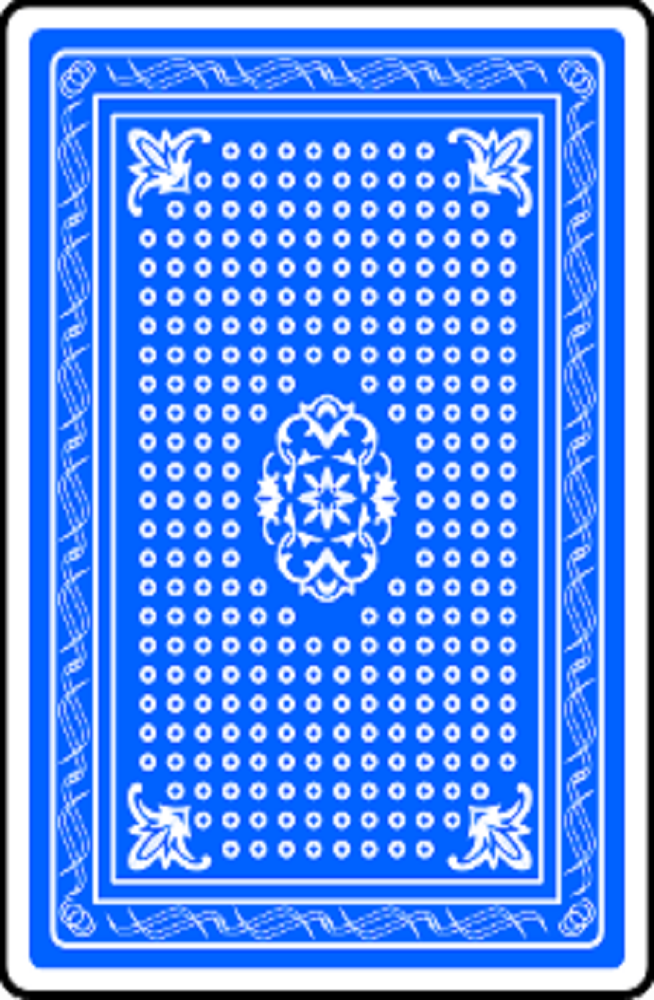

  <span *ngIf="gameCard.flipped; else back">
  
  </span>

  <!--<ng-template #back>-->
  <!---->
<!--</ng-template>-->

  <ng-template #back>
    
  </ng-template>

<!--<svg height="0" xmlns="http://www.w3.org/2000/svg">-->
  <!--<filter id="drop-shadow">-->
    <!--<feGaussianBlur in="SourceAlpha" stdDeviation="3"/>-->
    <!--<feOffset dx="0" dy="0" result="offsetblur"/>-->
    <!--<feFlood flood-color="rgba(0,0,0,0.4)"/>-->
    <!--<feComposite in2="offsetblur" operator="in"/>-->
    <!--<feMerge>-->
      <!--<feMergeNode/>-->
      <!--<feMergeNode in="SourceGraphic"/>-->
    <!--</feMerge>-->
  <!--</filter>-->
<!--</svg>-->
